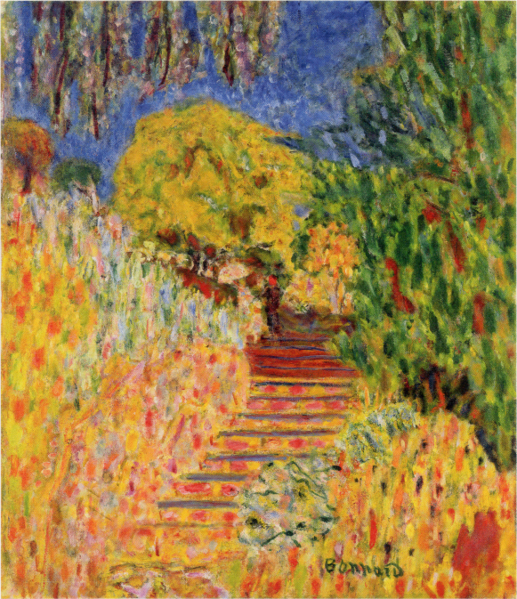

作品名 「ミモザのある階段」
花言葉 「感謝」「感受性」「思いやり」「秘密の恋」「優雅」「友情」
ミモザ
「感謝」
ミモザはアカシア属の総称の意ですが、ギンヨウアカシアやフサアカシアなどを通称して「ミモザ」と呼ばれています。ふわふわと風になびく、黄色く小さいお花が特徴的で、3月～4月に開花の時期を迎えます。黄色は西洋では春を象徴する色とされていて、黄色い花は寒く厳しい冬が終わり、暖かな春が来たことを告げる「幸せの花」と言われています。また、3月8日は、女性の社会参画を願う日として国連が定めた「国際女性デー」で、イタリアでは「ミモザの日」とも呼ばれています。この時期はイタリアでミモザの花が咲き始める時期だからだそうです。このミモザの日には、男性が女性に日頃の感謝や尊敬の気持ちを込めて、ミモザをプレゼントします。
ミモザのある階段
ピエール・ボナール
ボナールが晩年に暮らし地中海た海岸の町ル・カネの自邸「ル・ボスケ」へと通じる階段の下から、奥に咲き誇るミモザをはじめとした庭の一角を描いた作品。ピエール・ボナールは、ナビ派に分類される19世紀～20世紀のフランスの画家。ポスト印象派とモダンアートの中間点に位置する画家のひとりで、版画やポスターにも優れた作品を残している。また、ボナールは一派の画家（ナビ派）の中でも最も日本美術（ジャポニスム）の影響を強く受け、「ナビ・ジャポナール」と呼ばれた。
| 作品名 | ミモザのある階段 |
| 作者 | ピエール・ボナール |
| 制作年 | 1946年頃 |
| 種類 | キャンバス・油彩 |
| 寸法 | 80.8 x 68.8 cm |
| 所蔵 | ポーラ美術館 |